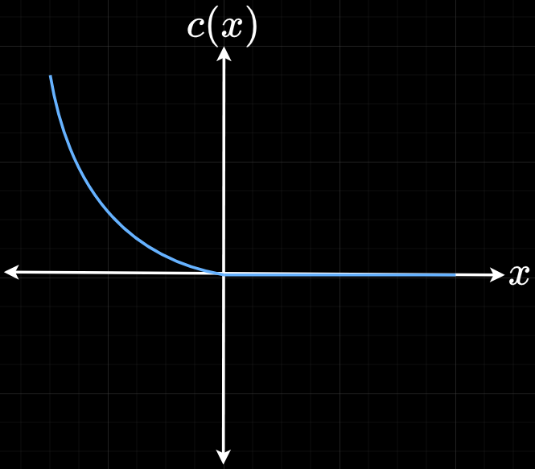

Fundamentally, a solution space will have very big and very small numbers in the same problem. There will be a huge dynamic range in the derivatives or the Hessian which will show up in Newton step. Because of the finite precision of double precision arithmetic, it will lead to loss of accuracy in the solution or a solution cannot be found.
Solutions include Augmented Lagrangian method - introduce a lagrange multiplier as well and use the penalty value to estimate the lagrange multiplier, i.e. offload the penalt at each iteration into the lagrange multiplier estimate. This avoids the need to increase $\rho$ and the multiplier also converges. Alternating Direction Method Multipliers (ADMM) is a flavour of this.
Gradient descent works since it uses first derivative. Using Newton's method can be a bit sketchy - the convergence rate drops off at certain